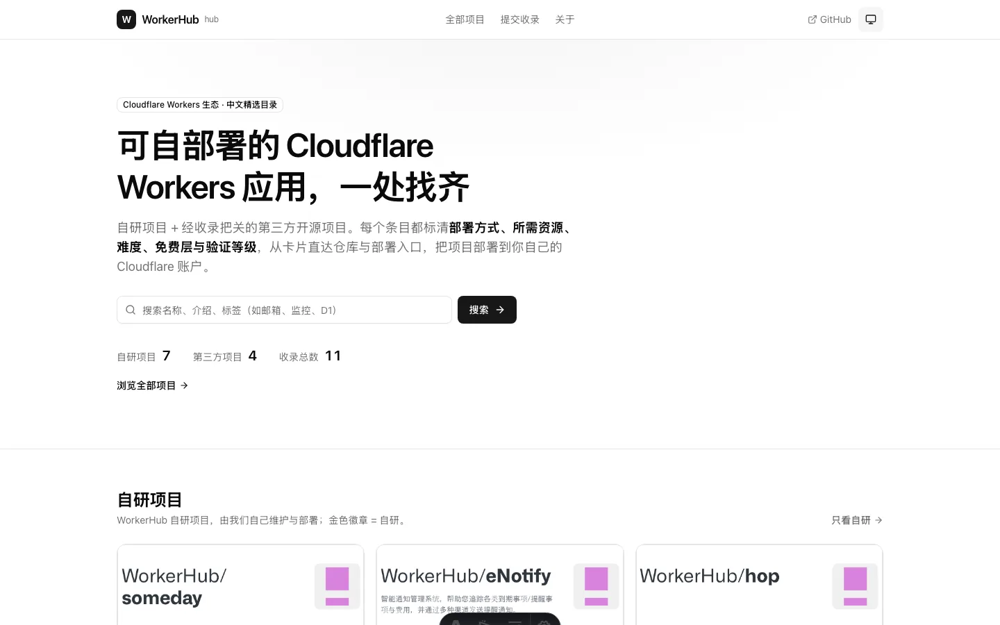
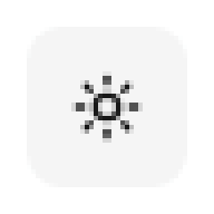
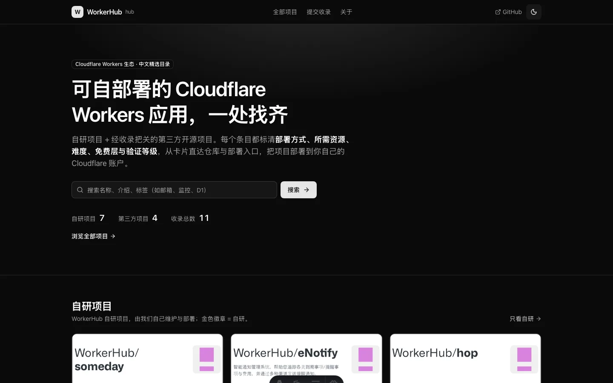

结论
- 从三档任一档起连点 3 次都回到原档，顺序恒为自动 → 亮色 → 暗色 → 自动，不跳档。
-
每次点击后
html.dark、color-scheme、图标与localStorage["hub-theme"]同步变化；不弹任何菜单。 -
aria-label与title同步更新为「主题：当前档，点击切换到下一档」；按钮内无可见文字。 - 刷新后档位保持；自动档下系统主题变化实时跟随；键盘 Enter / Space 均可切换。
- 筛选/排序下拉未受影响（
dropdown-menu.tsx保留），全程 0 页面异常。
三档截图与按钮特写
全页截图为 1440 × 900 视口；按钮特写为真实截图放大 5 倍（最近邻，无重绘）。

aria-label="主题：自动，点击切换到亮色"
html.dark=false · color-scheme=light ·
hub-theme=null（未点击过的默认态，按自动处理）

aria-label="主题：亮色，点击切换到暗色"
html.dark=false · color-scheme=light ·
hub-theme="light"

aria-label="主题：暗色，点击切换到自动"
html.dark=true · color-scheme=dark ·
hub-theme="dark"
单击循环 · 逐步断言
鼠标点击通过 CDP 真实派发（mouseMoved → mousePressed →
mouseReleased，点击按钮中心），非脚本调用
click()。每一步同时断言 13 项（档位 / 存储 / 暗色状态 / color-scheme /
aria-label / title / 图标 / 无可见文字 / 原生 button / 无 aria-haspopup、aria-expanded /
无菜单浮层 / island 已水合）。
| 步骤 | 档位 | html.dark | localStorage | 图标 | aria-label | 结果 |
|---|---|---|---|---|---|---|
| 初始（无存储） | system |
false | null |
monitor | 主题：自动，点击切换到亮色 | PASS |
| 点击 1 次 | light |
false | "light" |
sun | 主题：亮色，点击切换到暗色 | PASS |
| 点击 2 次 | dark |
true | "dark" |
moon | 主题：暗色，点击切换到自动 | PASS |
| 点击 3 次 | system |
false | "system" |
monitor | 主题：自动，点击切换到亮色 | PASS |
| 刷新前 | dark |
true | "dark" |
moon | 主题：暗色，点击切换到自动 | PASS |
| 刷新后 | dark |
true | "dark" |
moon | 主题：暗色，点击切换到自动 | PASS |
| 键盘 Enter（暗色起） | system |
false | "system" |
monitor | 主题：自动，点击切换到亮色 | PASS |
| 键盘 Space | light |
false | "light" |
sun | 主题：亮色，点击切换到暗色 | PASS |
| 点回自动档 | system |
false | "system" |
monitor | 主题：自动，点击切换到亮色 | PASS |
| 自动档 + 系统切暗色（不刷新） | system |
true | "system" |
monitor | 主题：自动，点击切换到亮色 | PASS |
| 自动档 + 系统切亮色（不刷新） | system |
false | "system" |
monitor | 主题：自动，点击切换到亮色 | PASS |
从每一档起连点 3 次
| 起点 | 实测点击序列 | 结果 |
|---|---|---|
| 自动 | system → light → dark → system | 回到原档 |
| 亮色 | light → dark → system → light | 回到原档 |
| 暗色 | dark → system → light → dark | 回到原档 |
其它验收项
| 验收项 | 实测方法 | 结果 |
|---|---|---|
| 点击不弹菜单 |
每次点击后统计
[role="menu"], [data-radix-menu-content],
[data-slot="dropdown-menu-content"]
数量；读按钮 aria-haspopup / aria-expanded / 可见文本
|
浮层 0，aria-haspopup=null，aria-expanded=null，可见文本为空 |
| 刷新保持档位 | 切到暗色后 Page.navigate 重载同一 URL | 刷新后 html.dark=true，hub-theme="dark" |
| 键盘 Enter / Space | 按钮 focus() 后 CDP 派发真实按键（Enter 带 text=\r，Space 带 text=" "） | 各前进一档，aria-label 同步更新 |
| 自动档实时跟随系统 | 停留在自动档不刷新，CDP 切换 prefers-color-scheme：dark → light | html.dark 实时 true → false，档位仍为 system |
| localStorage 不可用 | 注入 Storage.prototype.setItem 抛 QuotaExceededError 后点击 |
仍从自动切到亮色（图标 sun），未捕获异常 0 |
| 筛选/排序下拉未受影响 | /projects/ 点击「分类筛选」，再按 Esc |
role=menu 打开 1 个（8 个选项），Esc 后 0 个，主题档位不变 |
| 页面异常 | 全程监听 Runtime.exceptionThrown |
0 条 |
自动化与构建
pnpm test-
133 项：132 通过 / 0 失败 / 1 跳过。其中新增
tests/theme-toggle.test.ts（循环顺序、任意档连点 3 次回原档、无障碍文案、存储键与默认档、DropdownMenu 无残留）。 pnpm lint-
astro check：63 个文件，0 错误 / 0 警告 / 0 提示；Prettier 全部通过。 pnpm build- 构建成功，24 个页面产出（含
dist/index.html）。 pnpm validate:data- 11 个项目数据校验通过（官方 7 / 第三方 4）。
变更文件
-
src/components/site/theme-toggle.tsx：产品代码，唯一的功能改动（删除 DropdownMenu，改为单击循环）。 tests/theme-toggle.test.ts：新增单测。docs/evidence/theme-toggle/：本证据页与截图，不参与站点构建。
未改动：src/components/ui/dropdown-menu.tsx（筛选/排序仍在用）、页头布局、主题存储键与三档取值、BaseLayout
首屏防闪烁脚本。